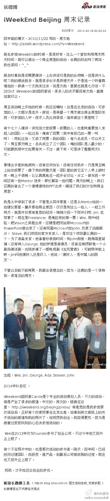

2010/11/22写的一篇博客《iWeekEnd Beijing 周末记录》： 报名参加iWeekEnd的时候，是很好奇，这么一个宣称利用周末两天时间，就可以做出一个商业原型的活动，会真的如此吗？...... iWeekEnd Beijing 周末记录
iWeekEnd Beijing 周末记录：四年前的博文，2010/11/22 写的，原文地址： 网页链接 报名参加iWeekEnd的时候，是很好奇，这么一个宣称利用周末两天时间，就可...文字版>> 网页链接 （新浪长微博>> 网页链接） 
才发现Linkedin上的投资人也挺多的。但领英现在讨厌的是，一刷动态，还全是英文内容。俺现在对英文有抵触，可能是好几年不操练的缘故，另外也觉得，在中国做生意，把汉语搞明白了就行。现在再装假洋鬼子，已经没那么高大上了。
很早之前，明俊和我还会重复这样的对话。明俊说：“我不是要打击你，但你去问问你父母，你姐姐妹妹，你朋友的意见？”。我回答：“我自己要做的事情，为什么要问别人的意见呢？”；明俊说：“你为什么就要跟别人不一样呢？”。 我回答：“我为什么要跟别人一样呢？”。还好，现在这种对话已经不见了。
//@Augur-O: 你想的越多，顾虑就越多；什么都不想的时候反而能一往直前。你害怕的越多，困难就越多；什么都不怕的时候一切反而没那么难。别害怕别顾虑，想到就去做。这世界就是这样，当你把不敢去实现梦想的时候梦想会离你越来越远，当你勇敢地去追梦的时候，全世界都会来帮你。送给明天的自己。@Ada李力:很早之前，明俊和我还会重复这样的对话。明俊说：“我不是要打击你，但你去问问你父母，你姐姐妹妹，你朋友的意见？”。我回答：“我自己要做的事情，为什么要问别人的意见呢？”；明俊说：“你为什么就要跟别人不一样呢？”。 我回答：“我为什么要跟别人一样呢？”。还好，现在这种对话已经不见了。
 iWeekEnd Beijing 周末记录
iWeekEnd Beijing 周末记录